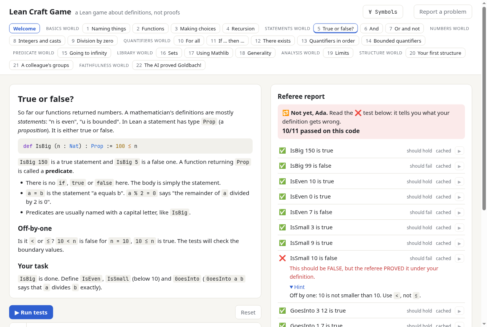

Write ∀ definitions that mean what you intend
A Lean game about definitions, not proofs. You write a definition; a hidden referee tries to prove or refute dozens of facts about it, and shows you what your definition gets wrong. It starts from zero Lean and ends with auditing a formal statement.
Windows
Download for WindowsLeanCraftGame-windows-x64.zipWindows 10 or 11, 64-bit. Unzip it and run LeanCraftGame.exe. If Windows warns about an
unrecognized app, choose More info → Run anyway.
macOS
Download for macOSLeanCraftGame-macos-arm64.dmgApple Silicon (M1 or later). Drag LeanCraftGame to Applications, then right-click it and choose Open the first time. Intel Macs: see running from source.
Linux
Download for LinuxLeanCraftGame-linux-x64.tar.gzx86-64 with glibc 2.35 or newer (Ubuntu 22.04, Debian 12, Fedora 36 or later). Unpack it and run
LeanCraftGame/LeanCraftGame.
All versions and release notes: GitHub Releases · source code

How it works
You never write a proof
You write a definition: a predicate, a structure, a formal statement. Dozens of hidden tests then ask an automated referee to prove or refute facts about it.
Every ❌ comes with evidence
The referee only says a definition is wrong when it has a Lean proof of the opposite, so each failure is a concrete counterexample, with a hint.
22 levels, from zero
Syntax first (def, if, ∧ ∨ ¬ →, ∀ ∃), then the traps of
Lean and Mathlib: casts, x / 0 = 0, sets, limits in ℝ. Last, auditing an AI's
"proof" of Goldbach's conjecture.
Learn to type the symbols
A built-in table shows how to type ∀, →, ≤ and the rest
with a backslash, with a typing drill.
Install
- Download the file for your system above, and unpack it.
- Start LeanCraftGame. It opens in your web browser.
- The first launch downloads Lean (about 300 MB) and the parts of Mathlib the game uses (about 450 MB). You can read the first levels meanwhile. It needs about 6 GB of disk space.
- From then on, the game works offline. Everything it downloaded is in one folder, so deleting that folder uninstalls it completely.
Your code and progress are saved in the browser. No account, no data leaves your computer.
Questions
Why does my system warn about the app?
The apps are not signed with a paid developer certificate, so Windows SmartScreen and macOS Gatekeeper show a warning for software they do not know. On Windows choose More info → Run anyway; on macOS right-click the app and choose Open. The source code and the build are public, in the repository and its release workflow.
Can I run it from source, or change the levels?
Yes. You need elan (Lean's installer) and Python 3.9 or newer:
git clone https://github.com/mmasdeu/leancraftgame cd leancraftgame lake exe cache get python3 web/server.py --open
This is also the way to run it on an Intel Mac. See INSTALL.md for details, and CURRICULUM.md for what each level teaches.
Where does the game store its files?
Windows: %LOCALAPPDATA%\LeanCraftGame. macOS: ~/Library/Application Support/LeanCraftGame.
Linux: ~/.local/share/leancraftgame. The folder also has leancraftgame.log, the place to
look if something goes wrong.